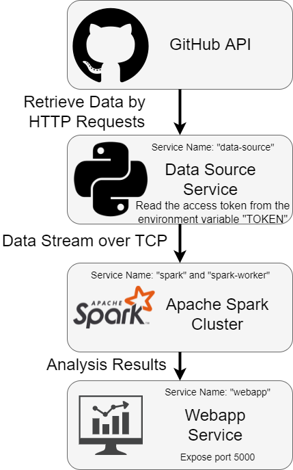

Projects
Spark Streaming Application
Implemented a streaming application in Python using Apache Spark and Flask for my Big Data Systems class, EECS 4415.
This streaming app computes different analytics based on data collected from the GitHub API. A data source script gets responses from three different requests and sends them to a Spark application every 15 seconds. The Spark app then processes the data in 60 second batch intervals and sends it to a Flask web application. The Flask app then visualizes the data on a dashboard.
Hadoop MapReduce
Designed and implemented a series of MapReduce operations in Python using Apache Hadoop for my Big Data Systems class, EECS 4415.
The first MapReduce operation computes the inverted index of the categories to businesses that are open on the weekend for a collection of Yelp businesses. The second computes the percent proportion of Yelp accounts created in each month (irrespective of the year). The third finds the top 4415 Yelp reviews with the most UFC (useful, funny cool) votes in descending order. The forth generates Yelp check-in logs in a distributed manner.

CheckIn
CheckIn is a mobile app that aims to improve mental health communication amongst the senior population in long-term care facilities. It was made for the programming portion of the 2021 Lassonde Games and was awarded 2nd place out of 35 teams.
CheckIn provides a simple UI/UX for seniors of all abilites to easily log their feelings. Nurses can then check on their patients' mental health trends and best allocate their limited time.
It uses react native for the front-end and node.js, express.js and mongoDB for the back-end.

Linux Shell
Designed and implemented a simple shell in C for my Operating Systems class, EECS 3221.
It Supports:
- all basic shell commands
- cd command to change directory
- pipes with |
- input and output redirection with > or <
- background processes by adding & to the end of any command
- !! history feature to execute the previous command
- exit command

Space Defender 2
Using Eiffel (unfortunately), I coded a complex game where a Starfighter must protect the galaxy by destroying enemy ships for as long as possible.
This was a project for my Software Design class, EECS 3311. I used multiple design patterns such as the state pattern, the singleton pattern, and the composite pattern. I also used draw.io to make a detailed architecture diagram.
While several tears were shed trying to complete this, I ended up passing all but one acceptance test and earned a 99.5% on the coding portion of the project.

Fridge Sensor
If you have an older fridge with no temperature display, then this project is for you! If the fridge ever stops working properly, it will warn you before your food melts or freezes.
I built a simple program using Arduino, C++, and Adafruit.io. It connects to a circuit with a sensor, which detects if a fridge has gone above or below the ideal temperature. If the fridge temperature goes above 7 degrees Celcius, an LED light on the circuit blinks. If it goes below -1 degree Celcius, the LED light is solid. Otherwise, in ideal conditions, the LED is off.

DVD Screen
A re-creation of the famous DVD screensaver using Processing. The "objective" is to see how long it takes until the DVD icon perfectly hits the corner of the screen. This is a classic way to pass time while reminiscing about your childhood.

Ball-Paddle Game
A simple game using Processing where the objective is to see how many times you can hit the ball off the paddle before missing.